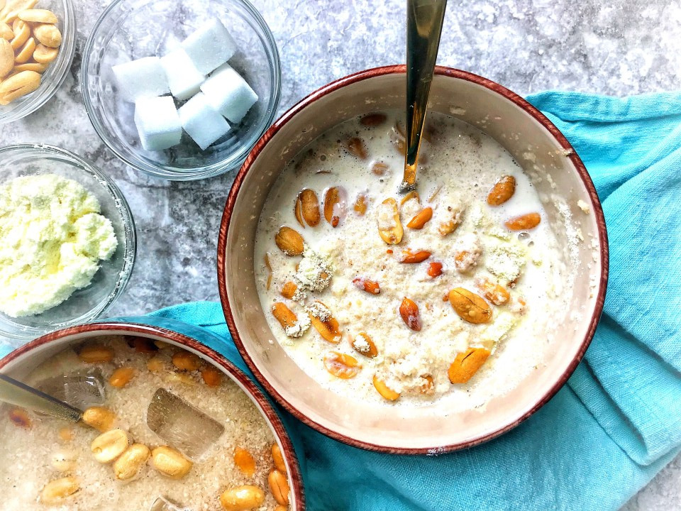

Gari Soakings

Delicious Gari Soakings
Gari Soaking is popular Ghanaian dessert made with a powdery food material
flour made from a cassava plant (gari). As the name implies, it is made by
soaking the gari or milk in water
Ingredients
- gari
- sugar
- water
- groundnut/peanut
- milk
Steps
- Fill a cup halfway with gari
- Add three spoons of milk to form paste and mix well
- Add the sugar and mix again
- Add your groundnut or peanut
- Fill the cup with water to make mixture lighter and enjoy.
- You can add a spoon of milo to give soakings a chocolate flavour